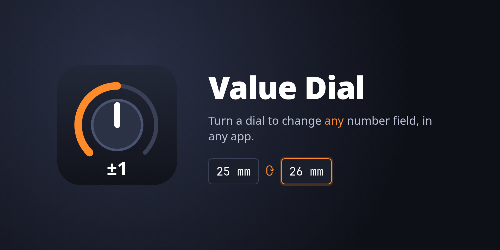
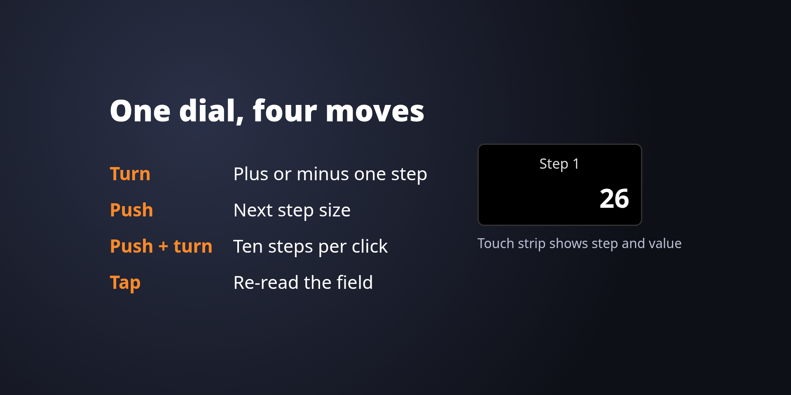
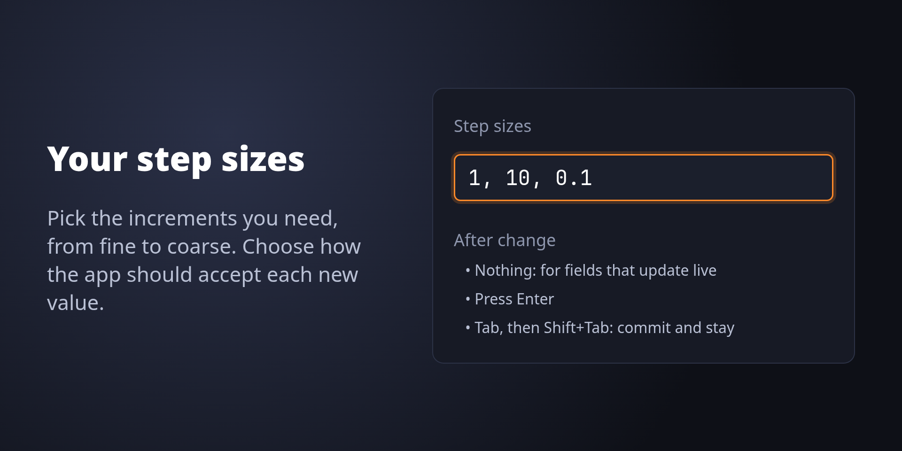
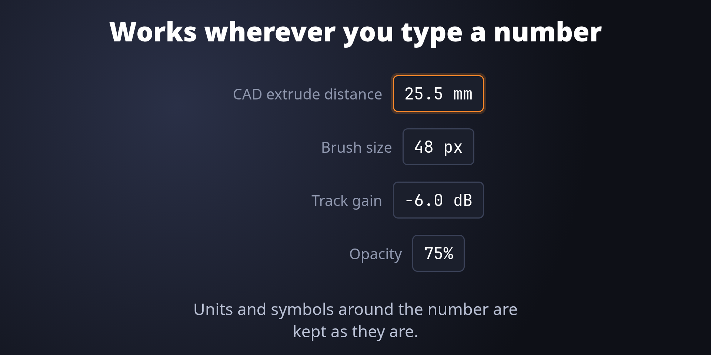

Value Dial
A Stream Deck + dial that changes the number in whatever text field has focus, in any app: a CAD extrude distance, a brush size, a track gain, a value in any form.

Setup
- Install Value Dial from the Elgato Marketplace.
- Drag the Value Dial action onto a Stream Deck + dial.
- macOS: allow Stream Deck under System Settings → Privacy & Security → Accessibility, then restart Stream Deck.
- Windows: if your app runs as administrator, run Stream Deck as administrator too, or Windows blocks the keystrokes.
- Click into a number field and turn the dial.
Controls
| Turn | Plus or minus one step per click |
| Push | Next step size |
| Push + turn | Ten steps per click |
| Tap the touch strip | Re-read the field |

Settings
Step sizes: comma-separated positive numbers. Default
1, 10, 0.1; the first is active on a new dial. Use
. as the decimal point.
After change: how the app accepts each new value.
- Nothing: for fields that update live as you type.
- Press Enter: careful, some dialogs treat Enter as OK.
- Tab, then Shift+Tab: commits by leaving the field, then comes back. Usually right for CAD dialogs.

How it works
The plugin selects and copies the field's text (your clipboard is put
back right after), changes the last number in it, and types the new
value in. Text around the number is kept: 25 mm →
26 mm, 50% → 51%. While you keep
turning it only sends keystrokes, and re-reads the field once you've
stopped for 1.5 s.

Limits
- Clipboard restore keeps text only: an image on the clipboard is lost when the field is read.
- Needs Stream Deck 7.1+ on Windows 10+ or macOS 12+.